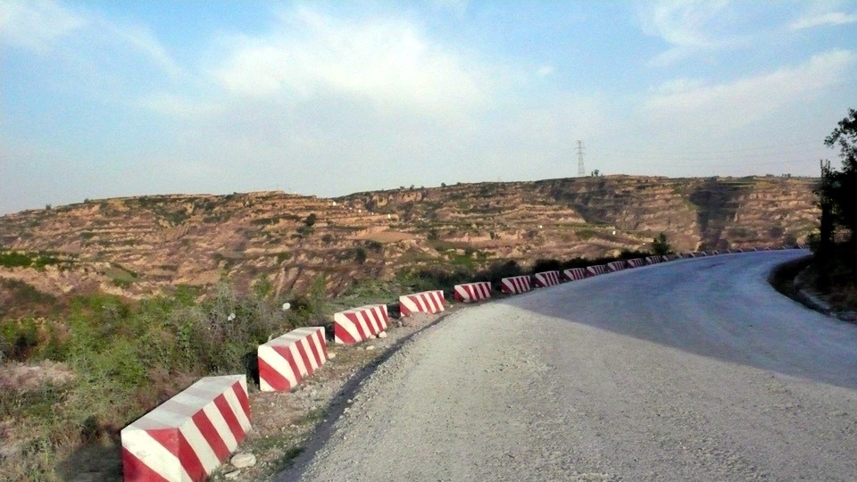
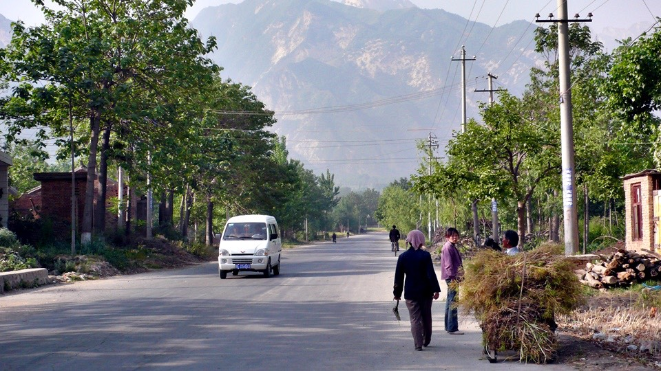
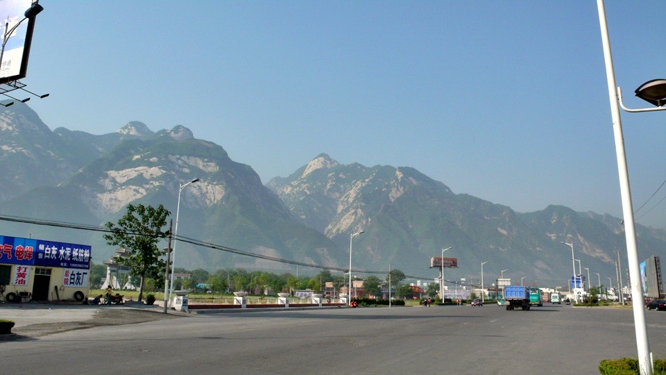
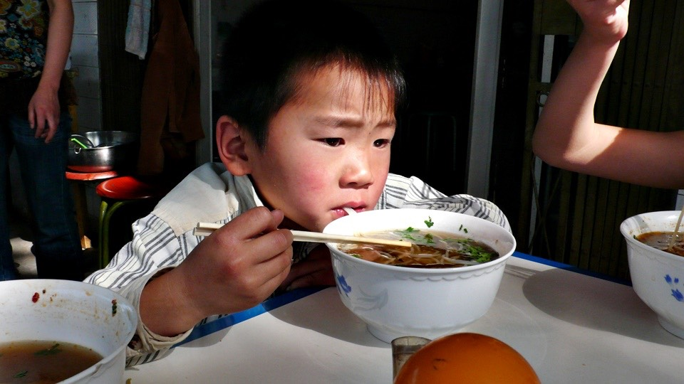
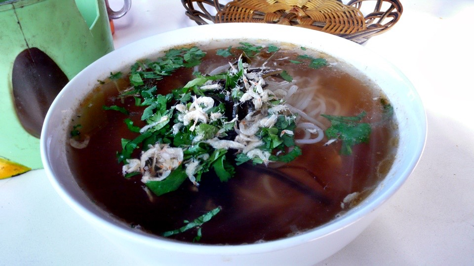
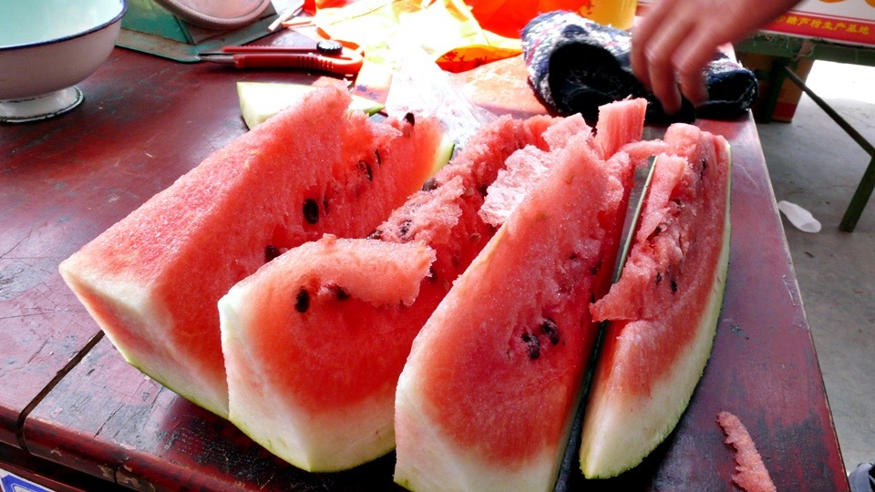
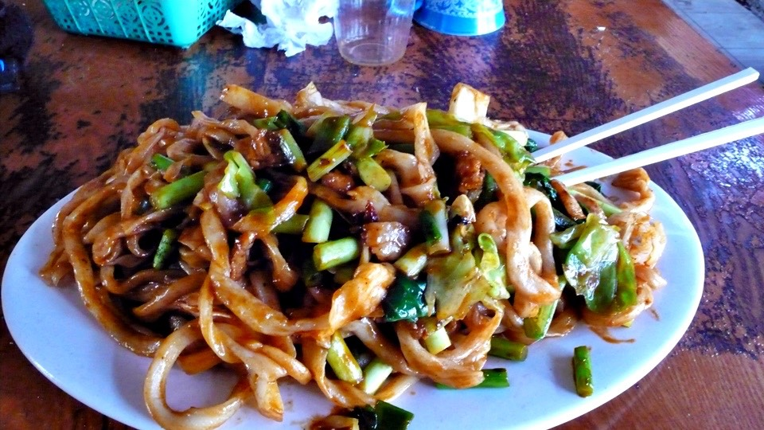
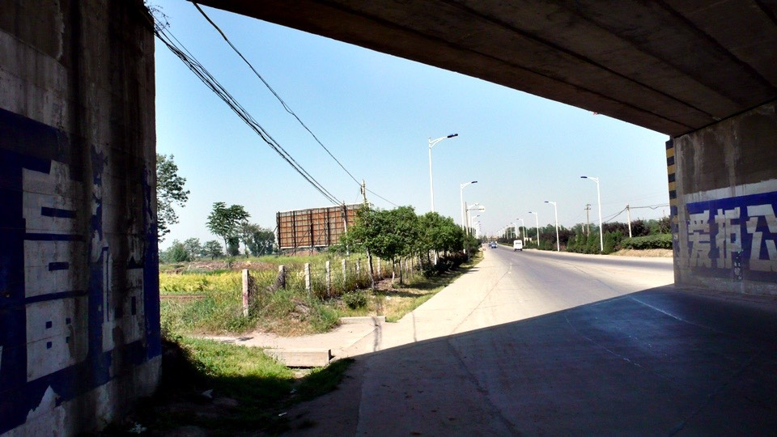
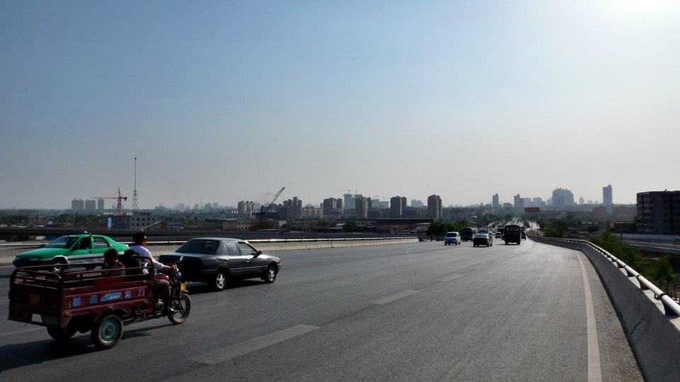
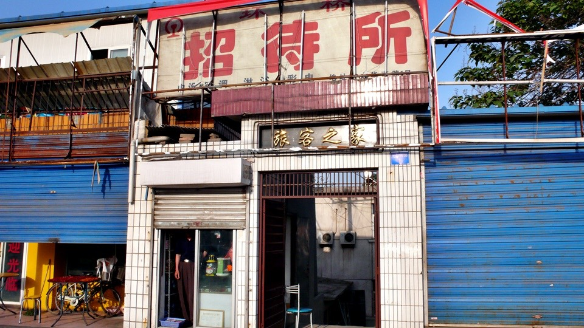

離開潼關的路真是爛的令人哭泣，滿地的碎石子砂礫，不論上坡還是下坡都是一種折磨。
十幾公里之後終於結束了這幾天爬坡的考驗，路開始轉為平坦，對腳的負擔也輕鬆多了。

一離開山區，目光所及之處全都是華山的山脈，觀光飯店和遊覽車絡繹不絕，從山腳下看華山還真的很美。
不曉得爬上去之後又是怎麼樣的風景？


今天要騎的距離不比昨天短，但少了上坡下坡，理當會好騎很多。
只是太陽越來越大，往西邊騎有一個很大的問題，就是下午兩三點之後，太陽就在臉的正前方照射。
即使戴著防強光的UV400太陽眼鏡，眼睛依然被照的張不開，而且這樣的情形會持續好幾個小時，直到今天落腳為止。
早餐把身上還僅有的乾糧吃光光，除了磚頭燒餅之外，每次吃這個，我的肚子都會抗議，只好先擱著當備用。
九點多看到冒著白煙的早餐店，老闆娘問我要吃什麼，看著琳瑯滿目的菜單，
然後看到桌上的小孩津津有味的吃著米線，所以我也有樣學樣的點了一碗米線。

結果真是點對了，這個很好吃說，QQ的米線配上高湯和海帶切絲、蝦米，再灑一點香菜，真是絕品！

為了抵抗強烈的太陽，讓我腦袋裡充滿著想要買一頂附有小花的遮陽帽戴在頭上。
等我今天騎到西安之後，我一定要去街上逛街，看有沒有適合的遮陽帽。
不然接下來要往西騎到烏魯木齊，每天都被這樣西曬，好像快被烤成乾魷魚的感覺。
一斤兩塊的紅色大西瓜，請老板切了四斤給我，開心的吃著西瓜避暑。
跟老闆講我是北京人，結果聊沒兩句天，老闆就用狐疑的口吻說『你不是北京人吧？』
嚇～！被你發現了，怎麼我的口音真的這麼爛嗎？/_\

中午在小餐館吃炒麵，老闆問我要炒什麼麵？是細麵還是拉麵？
我想都沒想就說我要吃炒拉麵，因為看旁邊的人吃感覺很好吃的樣子。
結果一盤炒拉麵讓我足足等了半個小時才上桌！
就看著老闆在那邊揉麵團，然後弄著兩公分粗的麵條，再一根一根的用手拉成麵條般的細度，
真的是一條一條慢慢用手拉，然後纏在兩手上，再往外撐開拉，然後啪！的彈一下桌子，
這樣才完工一人份的『拉』麵。
怎麼拉麵不是揉個麵糰，然後用刀切成麵條就好了嗎？真的是用手一條一條拉呀@@"
然後剛剛那個一人份的拉麵是其他先點的客人的，我的還要再等。
每一個都是現點現做，所以等了很久很久才輪到我的麵拉好。
要炒之前，老闆娘還問我要不要加辣子，我都說了不要了，可是老闆娘還是用辣油下去炒，
結果當然是很辣，才吃兩口舌頭就有點失去知覺，配著茶總算把全部的炒拉麵都吃光。

太陽很大，又沒有樹蔭可以躲的時候，我就窩在偶爾會出現的天橋底下。
看著外頭的烈日，明明才五月上旬，天氣就這麼熱，還好我沒有拖得更晚才出發，不然怎麼騎的動呀@@"

我以為白糖冰棒之所以會賣五角，是因為它是白糖口味的，所以特別便宜。
但是我先入為主的觀念居然是錯的。
五角冰棒可不只白糖這種口味，在發現這個秘密之後，今天我吃了八隻冰棒。
一共有白糖，哈密瓜、紅豆、綠豆、牛奶、草莓等口味，通通都是五角一隻呀。
面著西曬的太陽騎車，快要進入西安之前，道路無預警的變得很爛。
東繞西繞總算進入超級巨大都市－西安。

這裡說不定比北京市還大呢@@"
真的太大太大了，說不定有整個基隆＋台北縣＋台北市，也就是整個北台灣那麼大，可是這裡只是一個城市而已。
大城市固然漂亮，道路規劃的也很有條理，但是物價則猛然的提升。
沿路問著幾間『招待所』，居然都是一百多塊錢一晚上的房價，這是什麼鬼呀！？
而且在工作人員跟我報價的時候，他們的表情很明顯就是
『問那麼多幹嘛，反正你又住不起。』
可惡，有一種被狗眼看人低的感覺，很想拿出白花花的百元鈔票打她的臉。
但是錢不應該是這樣子浪費的，摸摸鼻子繼續找便宜的旅館，
反正就邊騎邊問，然後往火車站的方向移動，
因為明後天要去旅行溜達的時候，都要去火車站那邊搭旅遊巴士:D
所以越靠近那邊對我越方便。
旅館實在太多太多了，只要勤快一點多問幾間，一定可以找到跟自己目標價位符合的旅館。
問著問著就找到一間一晚上40塊的招待所，還是有一點貴，稍微試著殺價一下，
說我要連續住三個晚上，有辦法便宜點嗎？
老闆很為難的說，這陣子房間都很滿，要算便宜不太容易，
但是經過溝通交涉，最後還是以一晚上30元，連住三天的方式成交。

看到房間才知道為什麼會開價40元，因為是一間還蠻不錯的雙人房。
看來這三天每天都可以睡得很安穩了～
今天晚餐就隨便一點，把帶了好幾天美祿拆了兩包，然後把磚頭燒餅扳成細細小小的碎片，
淋上旅館提供的熱開水，就變成自製的巧克力口味麥片，泡軟之後終於能吃的下肚，而且很飽很飽了。
從北京出發了十三天，終於抵達西安了。
北京到西安的這一段路，在出發之前，就定義成B2P暖身的騎乘，從西安出發開始，才是真正的挑戰。
現在暖身終於結束了，裝備的狀況和小多的情形都很好，我的身體也很健康，暖身的程度剛剛好。
晚上跑去接上吃消夜，晚上即使到了十點、十一點，街上都還是很熱鬧，不會黑壓壓的像空城。
特地找了一間有賣聽說是『一定要吃！』的羊肉泡饃。
還真貴~_~一碗要12塊，牛肉泡饃就只要9塊而已。
就是一碗裡面有切成丁狀的饃(應該就是餅類的東西)然後澆上很好喝而且很燙的熱湯，
上頭再放好幾片清燉羊肉，然後裡頭還有一些的冬粉。
配菜有辣椒醬跟醋醃蒜頭，這些配羊肉都還蠻好吃的。
饃泡在湯裡面吸飽了湯汁之後，吃起來還不錯吃。
算是蠻推薦的料理，只是挺貴的就是了~_~
明天睡醒就要去遊覽兵馬俑，真是又期待又開心呀！
跟旅館的老闆打聽明天該怎麼去，從住的地方走路到火車站只需要十分鐘的時間。
然後看牌子搭交通車就行了，但是兵馬俑的門票很貴，一張要90塊錢，
另外還有其他地方的門票，像是秦王陵等地方，明天得帶多少錢出門呢@@"
繼續閱讀：5.6 始皇帝的泥巴軍團
中國-人民幣－ 1：4.3 台幣
5.5
總計：60元
早午餐米線2元、四斤的西瓜8元、冰棒八隻4元、午餐炒拉麵4元、住店30元、消夜羊肉泡饃12元]